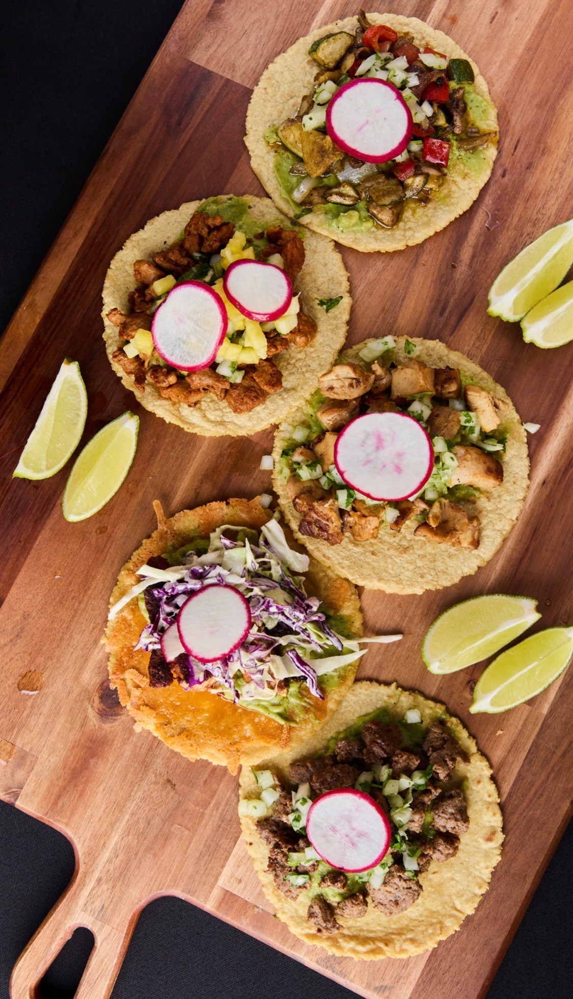
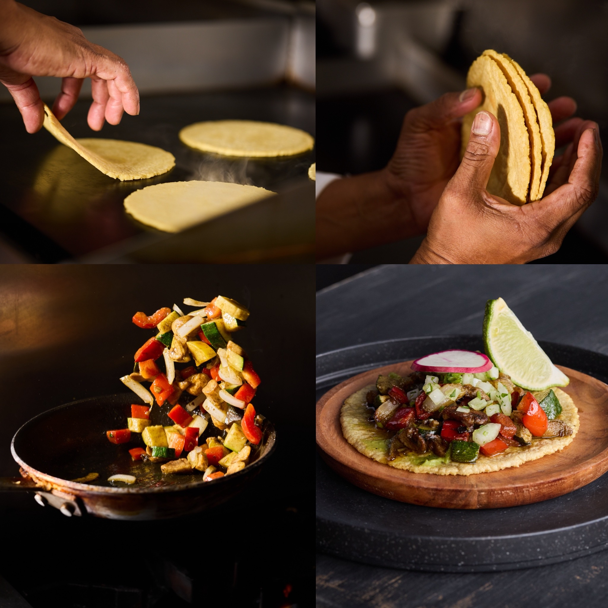
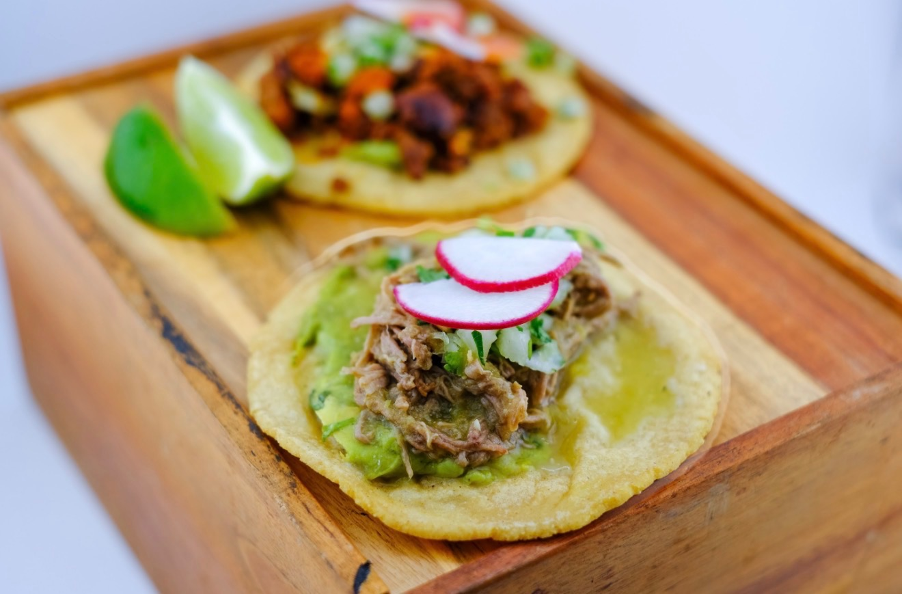
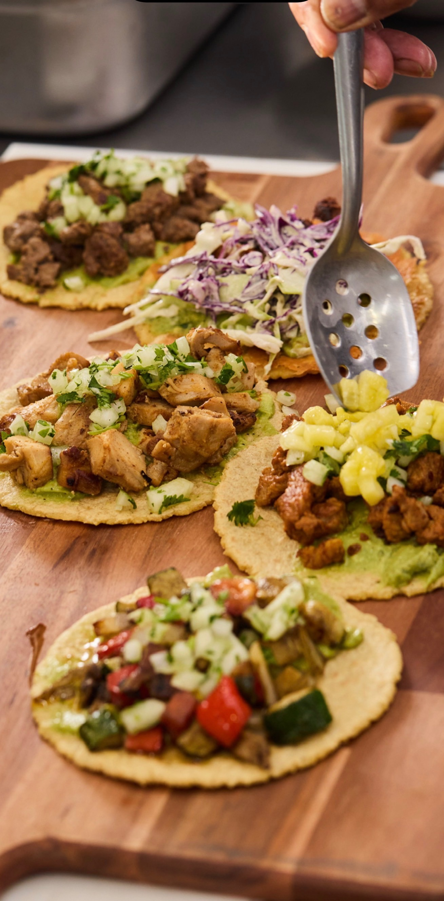

01
Taco Cart Catering
Fresh handmade tortillas, classic proteins, rice, beans, salsas, guacamole and taco accompaniments served onsite.
Request catering →San Diego • Southern California
Fresh tortillas made onsite, bold Mexican flavors and warm hospitality for weddings, private celebrations and special events.
The Artesano Experience
Artesano Taco brings the energy of an open-air taco stand directly to your event. The focus is simple: fresh ingredients, handmade corn tortillas prepared onsite and a smooth catering experience from setup through service.
Whether it is a backyard celebration, wedding or company gathering, the menu is designed around familiar Mexican flavors prepared fresh for your guests.
View catering details →
Made in front of your guests
The tortilla is part of the experience — made fresh during service and paired with grilled proteins, house-made salsa and fresh toppings.
Start Your QuoteA Taste of Artesano



Let’s plan your event